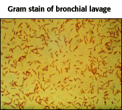

Case Study 1
A 64-year old male with fever, malaise, and cough.
Correct!
Question 2 of 6
What is the shape of the infecting organism?|  |
|
||||||||


University of Arizona
Tuesday, August 4, 1998
Contact the Development Team
http://biology.arizona.edu
All contents copyright © 1998. All rights reserved.